Trifold A4 para hamburgueria artesanal: capa com foto herói, combos na primeira aba que se abre, o burger da casa no centro e preços num só eixo. O mesmo sistema vira o flyer de abertura.
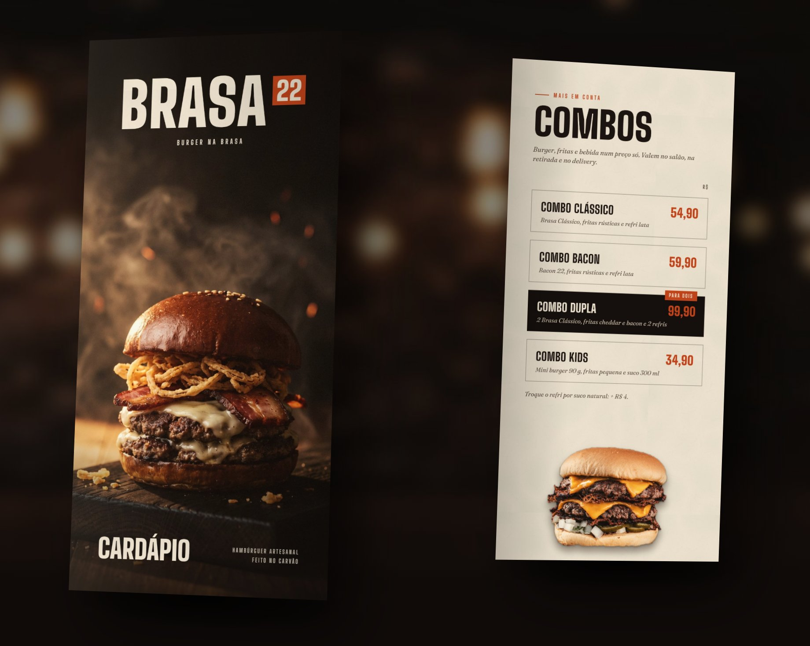
Quem abre a capa cai primeiro nos combos. Aberto, o olho vai ao centro escuro, onde está o Braseiro. Clássicos à esquerda, porções e sobremesas à direita.
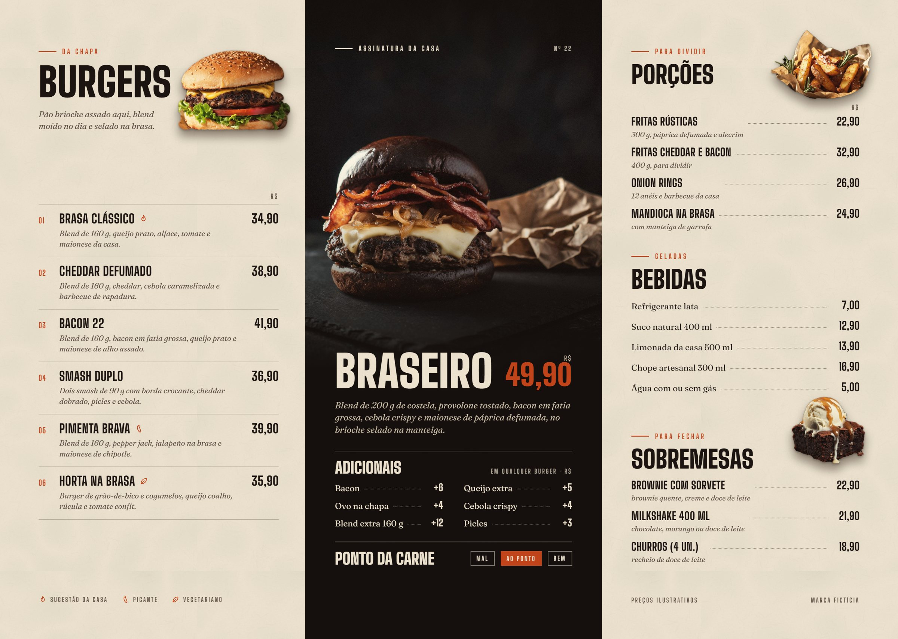
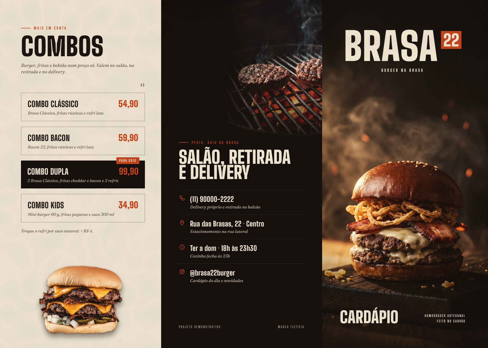
Algarismos alinhados à direita e "R$" só no topo de cada bloco. A pessoa compara o prato, não fica caçando preço.
Cada seção tem um prato recortado com sombra de contato sobre o papel: dá apetite sem poluir a lista.
Painéis de 100, 100 e 97 mm. A aba que dobra para dentro é 3 mm menor e nada importante cruza a dobra.
Mockups montados com a arte final, sobre a foto do salão desfocada.
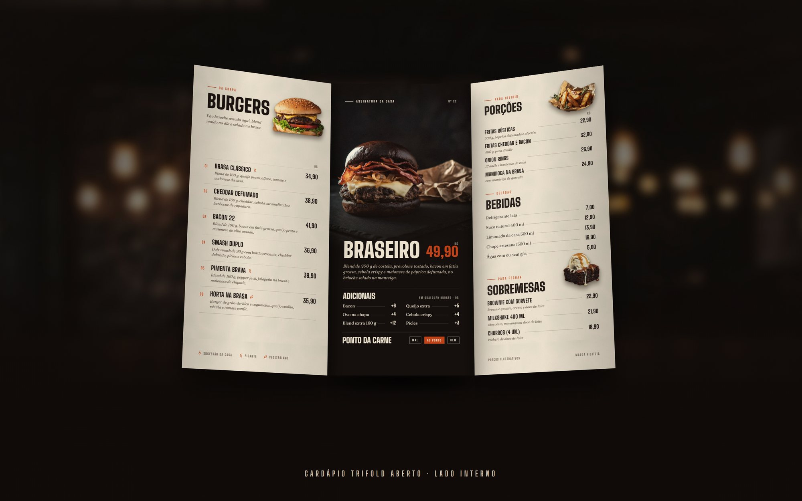
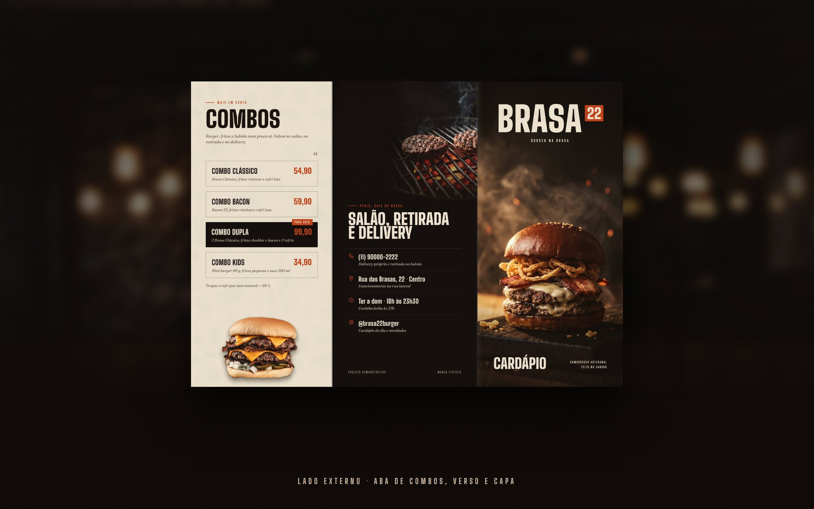
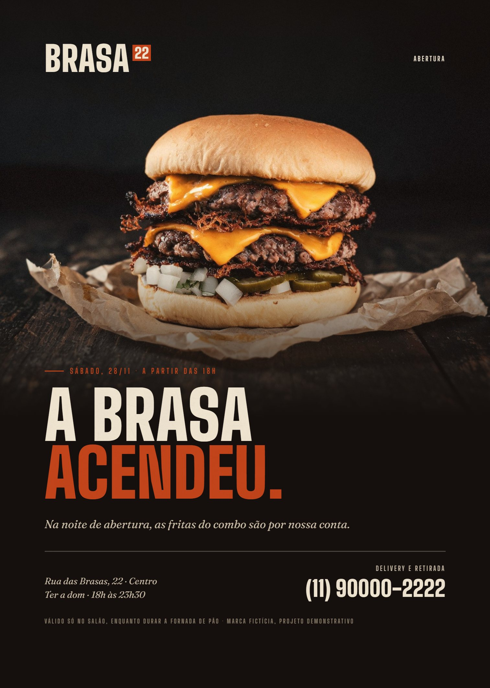
Foto do smash ocupando dois terços, título em duas linhas e a oferta numa frase. Endereço e telefone no pé, onde a pessoa procura.
PDF com 3 mm de sangria e marcas de corte, pronto para a gráfica.
Fontes, cores e tratamento de foto iguais ao cardápio e ao outdoor da campanha.
Todas as fotos com a mesma luz lateral quente, fundo quase preto, madeira queimada e papel pardo. Depois, um tratamento único de cor e grão para parecerem da mesma sessão.
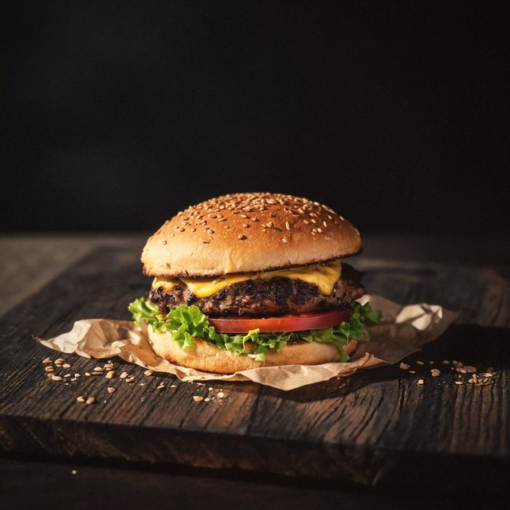
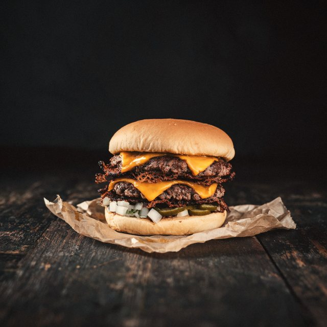
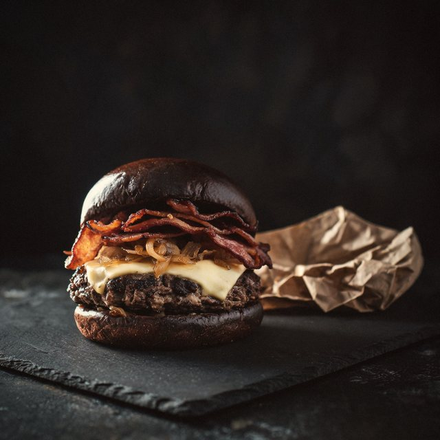
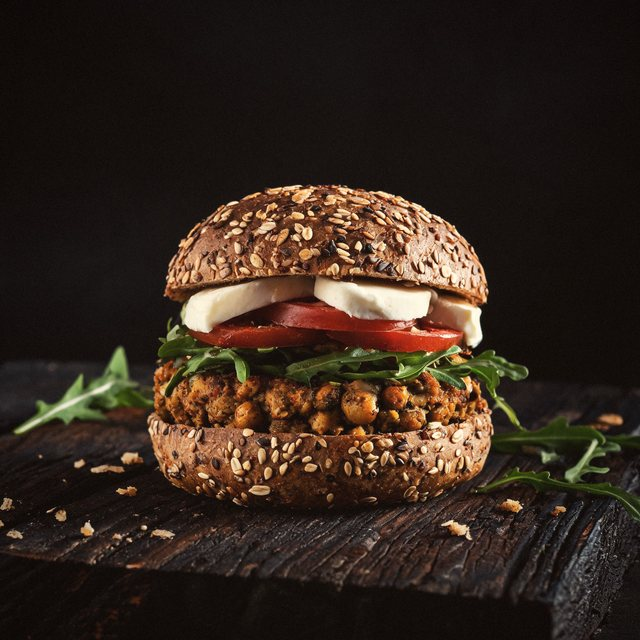
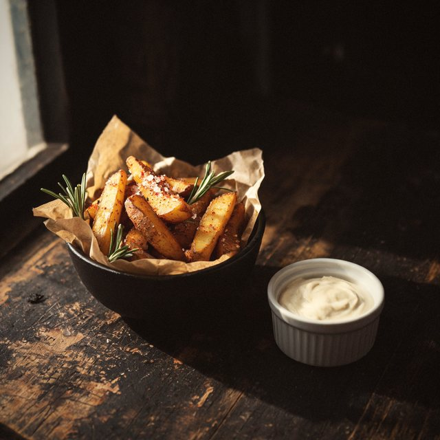
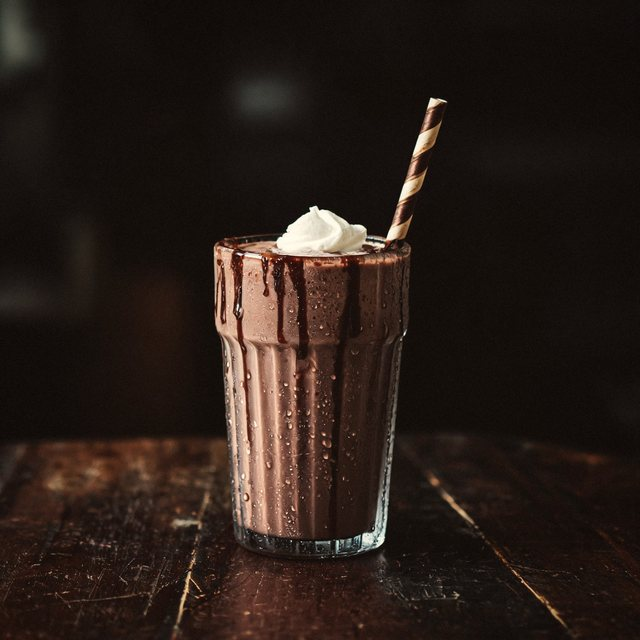
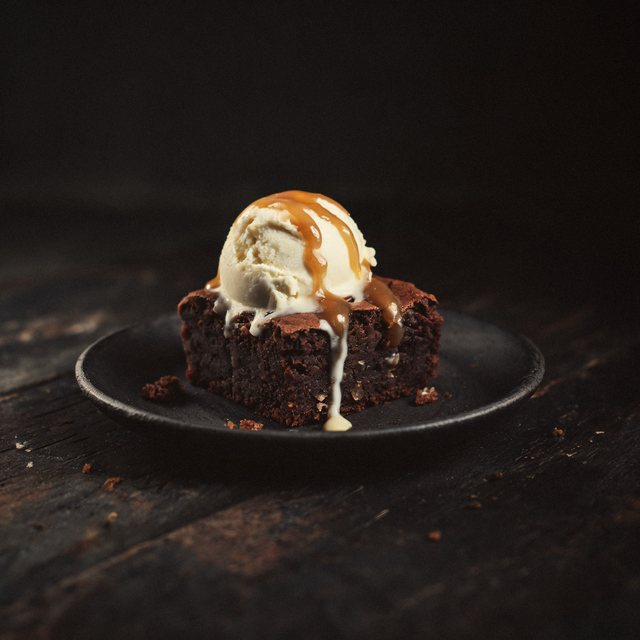
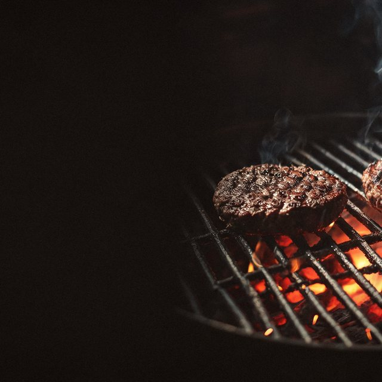
As fotos foram geradas com IA (Tripo) só para este projeto demonstrativo. Num projeto real, uso fotos do produto do cliente, feitas na casa, com a mesma direção de luz.
Logo tipográfico, duas famílias, duas cores e um neutro. Funciona na impressão simples, no fundo escuro e no tamanho de um ícone de aplicativo.